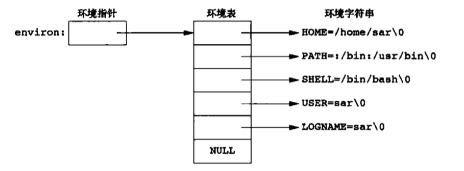

Apue读书笔记-Unix 守护进程
背景知识
进程环境
进程启动
C程序都是从main函数开始执行，当内核执行C程序时（使用exec函数），在main函数前先调用一个特殊的启动例程，可执行程序文件将此启动例程指定为程序的起始位置（由连接器设置），启动例程从内核获取命令行参数和环境变量值，之后再运行main函数
进程终止
进程终止方式：exit、_exit、 _Exit，exit会执行清理操作，而其他函数直接进入内核。exit首先调用各终止处理程序，然后关闭所有打开的流。（现代实现中exit不在关闭流，因为进程结束后会关闭进程中所有打开的文件描述符
环境表
每个程序都会接收到一个环境表，全局变量environ包含字符指针数组的地址。

通常使用getenv和putenv来获取特定的环境变量。
C程序内存空间布局
包括下面几个部分：
- 正文段：CPU执行的机器指令，只读，程序的正文会共享。
- 初始化数据段（数据段）：存放明确赋予初值的变量，
int ss = 666; - 未初始化数据段（bss）：程序运行前，内核会将它们初始化为0或者空指针。
- 栈：自动变量、函数调用时的参数、返回地址、调用的环境变量。
- 堆：动态分配的变量。
下图是程序内存布局（逻辑上，不保证物理内存也是这样）
进程控制
进程标识
ID为0的进程通常是调度进程，常常被称为交换进程。ID为1的进程是Init进程，在由内核调用，Ubuntu下是/sbin/init，负责自举过程结束后由内核调用，读取系统初始化文件/etc/init.d/、/etc/rc*.d/文件
fork
fork创建的新进程称为子进程，fork调用一次返回两次，对于父进程返回新建子进程PID，而子进程返回0。子进程和父进程继续执行fork调用之后的指令，子进程是父进程的副本，子进程获得父进程数据空间、栈、堆、文件描述符、标准IO的缓冲区，子进程和父进程不共享储存空间的部分，共享正文段。
因为fork后会紧跟exec，所以很多实现不会完全复制父进程，而是使用写时复制（Copy-On-Write,COW），这些区域访问权限为只读，如果试图修改这些区域，内核是为修改区域的那块内存制作一个副本，通常是虚拟存储系统的一页。
子进程继承：实际用户ID、实际组ID、有效用户ID、有效组ID、附属组、进程组ID、会话ID、控制终端、设置用户ID标志、当前工作目录、根目录、文件模式创建屏蔽字、信号屏蔽和安排、对任意打开文件描述符执行时关闭（close-on-exec）标志、环境、连接的共享存储段、存储映像、资源限制。
父子进程退出状态：
- 父进程先于子进程退出：这些进程的父进程都变为init进程（init进程收养）。在一个进程终止时，内核逐个检查所有活动进程，判断是否是终止进程的子进程，如果是则该进程的父进程ID就更改为1。
- 子进程先于父进程退出：内核为每个终止子进程保存了一定的信息，所以当终止进程的父进程调用wait或waitpid时可以得到这些信息（进程ID、终止状态、CPU时间总量）。对于已经终止、但父进程未对其wait的进程称为僵死进程（Zombie）
当一个进程终止时，内核向其父进程发送SIGCHLD信号
如何使父进程不等待子进程也不会使子进程变为僵死进程？调用Fork两次，这样父进程是init，会接管子进程，同时init进程会wait子进程
1 |
|
pid_t wait3(int *statloc, int options, struct rusage *rusage);增加资源统计的rusage
exec
exec函数会替换当前进程的正文段、数据段、堆、栈。每个文件描述符的执行时关闭（close-on-exec），就是用于exec函数，如果设置了这个标值，则exec的新程序将不会继承这个文件描述符，会在执行exec后关闭。
用户ID、组ID
实际用户：执行程序的用户。
有效用户：进行权限计算时使用，如果一个程序有suid权限，普通用户执行时，实际用户是普通用户，有效用户是root
nice
进程通过调整nice值选择以更低的优先级运行，nice越低优先级越高。下面的程序有父子两个进程并行运行，各自增加自己的count，运行10s后停止，打印count的值，在并行运行前子进程会根据命令行参数调整nice值
1 |
|
进程关系
终端
终端信息保存在/etc/ttys，每个终端信息一行，具体步骤如下：
- init进程读取/etc/ttys文件，对每个终端设备调用一次fork。
- 生成的子进程exec getty程序，实际用户ID和有效用户ID为0.
- getty程序打开终端设备，之后将文件描述符0、1、2设置为该设备
- getty输出
> login: - 在用户输入用户名后，调用login程序，
execle("/bin/login", "login", "-p", username, (char*)0, envp);
- 之后login调用getpass显示
> Password:等用户键入后，调用crypt加密，与/etc/passwd中的密码比对。 - 如果多次输入命令失败，login将会exit，父进程init了解后，再次fork，调用getty
如果登陆成功
- login将当前工作目录改为用户起始目录
- 调用chown更改终端所有权
- setgid、initgroups设置进程组ID
- 初始化环境变量，HOME、SHELL、USER、LOGNAME、PATH
- 登陆shell，
excel("/bin/sh", "-sh", (char*)0) - 登陆shell会读取启动文件
*.profile
进程组
每个进程出了有一个进程ID外，还属于一个进程组，同一进程组接受来自同一终端的信号。进程组ID是进程组长的PID。
int setpgid(pid_t pid, pid_t pgid)加入一个已有的进程组或者创建一个新进程组
pid_t setsid(void)创建一个新会话，调用进程作为组长。如果已经是组长则会出错。
会话
会话是一个或多个进程组的集合。
通常由管道将几个进程编成一组
会话与进程组的特性：
- 一个会话可以有一个控制终端。
- 与控制终端连接的会话首进程被称为控制进程。
- 会话有一个控制终端，则它有一个前台进程组，其他进程组为后台进程组。
- 输入终端退出键（Ctrl+\）会讲信号发送至前台所有进程
守护进程
实现
守护进程编程规则（防止不必要的交换）：
- 调用umask将文件模式创建屏蔽字设置为0。
mode_t unmask(mode_t cmask)设置后，再使用creat创建的文件的访问权限，在unmask中指定的一定会关闭。所以在守护进程中将屏蔽字清空主要是防止继承的屏蔽字会影响功能，比如继承的屏蔽字关闭了组读写，这样守护进程创建的文件就不能读写了。 - 调用Fork，然后使父进程exit。如果是通过shell启动，父进程结束，shell会认为命令完成。子进程继承父进程的GID，同时获得新的PID。
- 调用setsid创建一个新的会话。setsid会让子进程成为新进程组组长、进程组首进程、没有控制终端，之后再fork会使新的子进程不再是进程组首进程，这样就不会被分配控制终端。
- 将当前工作目录更改为根目录。因为有可能父进程继承过来的当前工作目录是在一个挂载文件系统上。
- 关闭不需要的文件描述符。可以使用open_max函数，或者getrlimit函数获取最高文件描述符值，然后遍历描述符来关闭。
- 打开/dev/null，使其具有文件描述符0，1，2。这样那些会向标准输出写、向标准输入读的库函数就不会产生影响。
1 |
|
错误记录
因为守护进程没有控制终端，所以不能输出到shell里，为了集中管理错误日志，BSD实现了syslog设施，下面是syslog的详细组织结构。
产生日志的方法：
- 内核函数调用log函数，通过open /dev/klog来读取
- 用户进程调用syslog函数产生日志，日志发送到unix socket /dev/log
- 发送日志到udp端口514
/etc/syslog.conf配置了syslogd将日志消息发送到哪
单实例守护进程
类似cron这样的守护进程，应该保证只有一个副本在运行。
解决方案：使用文件锁，在守护进程运行时创建一个固有名字的文件，并在该文件加上写锁，之后创建写锁都会失败。在守护进程结束时，将这把锁删除。
1 | int lockfile(int fd) { |
记录锁使用fcntl，能够锁住文件范围。int fcntl(int fd, int cmd, …)对于记录锁cmd是F_GETLK、F_SETLK或F_SETLKW，第三个参数指向flock结构体：
- 锁类型包括:F_RDLCK（共享锁）、F_WRLCK（读写锁、独占锁）、F_UNLCK（解锁某个区域）
- 若l_len为0表示锁的范围扩大到最大可能偏移，不管向该文件追加写了多少数据都在锁的范围内。
- 在给定字节上只能有一个独占锁。
守护进程惯例
- 锁文件一般存放在/var/run里
- 配置选项一般存放在/etc目录里，配置文件名一般为name.conf，name为守护进程的名字
- 守护进程读取配置文件一般只在启动时查看，若更改了配置文件，守护进程捕获SIGHUP信号，收到信号后重新读取配置文件
- 本文链接：https://ssdemajia.github.io/2019/03/12/Unix-%E5%AE%88%E6%8A%A4%E8%BF%9B%E7%A8%8B/
- 版权声明：本站所有文章除特别声明外，均采用 CC BY-NC-SA 3.0 CN 许可协议。转载请注明出处！